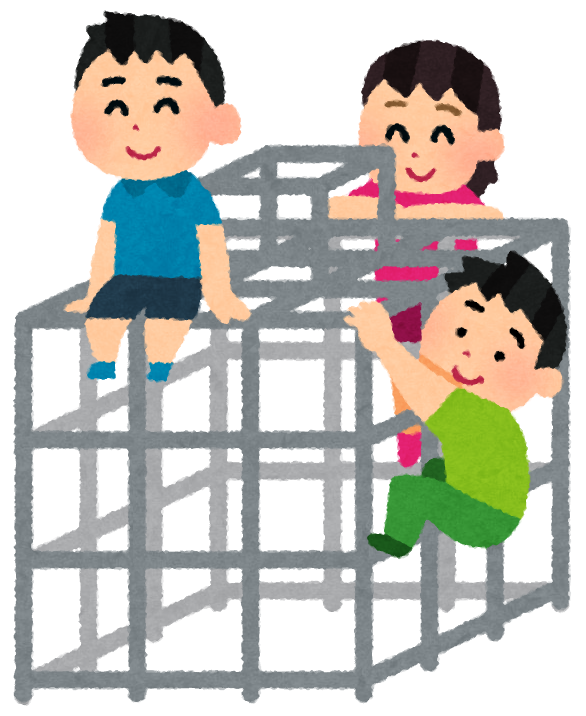
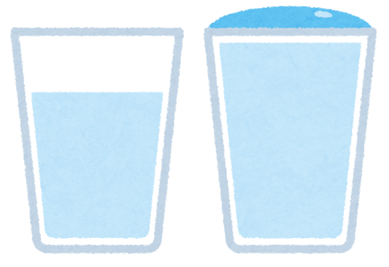

かずとすうじ
もくじ[]
くらべた ことが あるかな


おおいのは どちらかな
| 🍎🍎🍎🍎🍎 🍎🍎🍎🍎 | 🍏🍏 |
| ✏️✏️✏️ | 🖊️🖊️🖊️🖊️🖊️ 🖊️🖊️🖊️ |
| ⚽⚽⚽⚽⚽ | 🏀🏀 |
なかまづくり
足りるかな
かぞえ上げのれんしゅう保護者の方へ
- ^
算数の第1章ということで緊張感を欠いている保護者は居ないだろうか。残念ながら学校教育に余裕や遊び（物事のゆとりや余白のこと）などは存在しません。この「数と数字」というテーマは、少し言語学の言葉も使って言い換えると「数と数詞 Numbers and Numerals」で、リンゴなどの具体的な物体を抽象的な数で表現し、文字（数字）で書き表す。そういったことを学ぶためのページです。
入力はキーボードや右の上下矢印で可能です。1～10個のアメまでしか生成できません。それ以上の数は別のページで勉強してもらいましょう。
操作とシナリオ例:
- 入力欄にアメの数を「5」と入力して『アメを集める』ボタンを押す。
- この操作を「箱の外にアメが5個あります」と説明する。
- 箱の中にアメを3個入れる。
- この操作を「箱の中にアメを3個、直しました」と説明する。
このとき、箱の外にあるアメの個数は、$5-3=2$個と表せる。 - ときには、箱の中からアメを取り出す。
- この操作を「箱の中のアメを～個、食べました」と説明する。
- ^ このページの本文では、小学校1年生に習う漢字のみを使用しています。もしお子さまが、習っていない漢字に拒否感を示しているようであれば、ふりがながあるからと無理に教育を敢行するのではなく、一度、国語の漢字学習の方から優先してほしいと思います。